ilsangdogoo
Choi Sungwoo · woodwork, Korea
10–14 September 2026·Hall 5A, Stand N57
Décor & Design
Everyday objects,
seeds of time

When does beauty come to dwell? It's a question I carry around with me.
A piece of log, good for nothing at all. Could something start again even in there?
I think of what I make as seeds of time. One leaves my hands, reaches someone, and slowly opens inside their days. I'm rooting for it from here.
Useful and useless, stumbling stone and stepping stone, a single day and forever — the pleasure is in crossing between them. Somewhere on the border of the everyday and art, I keep walking, a step at a time.
The Work
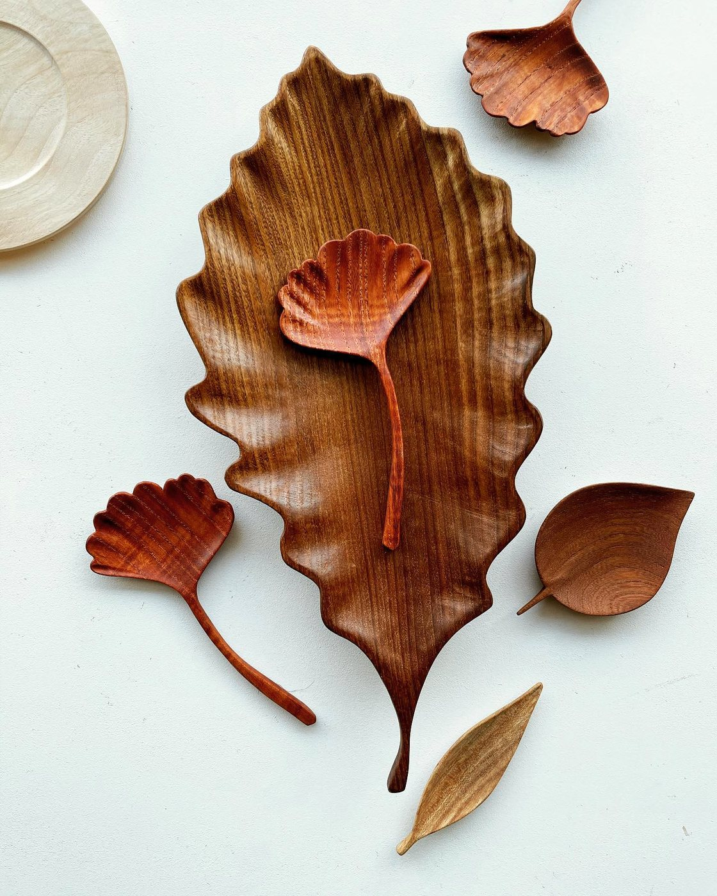
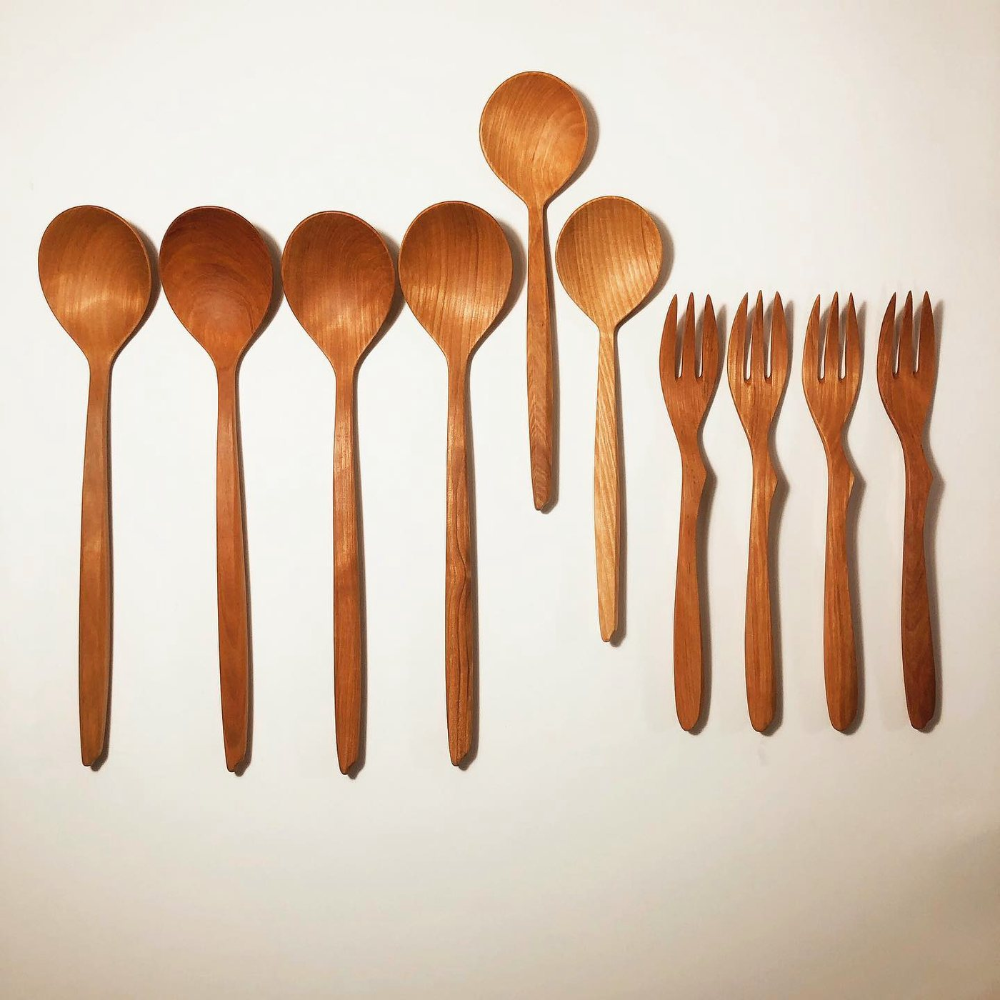
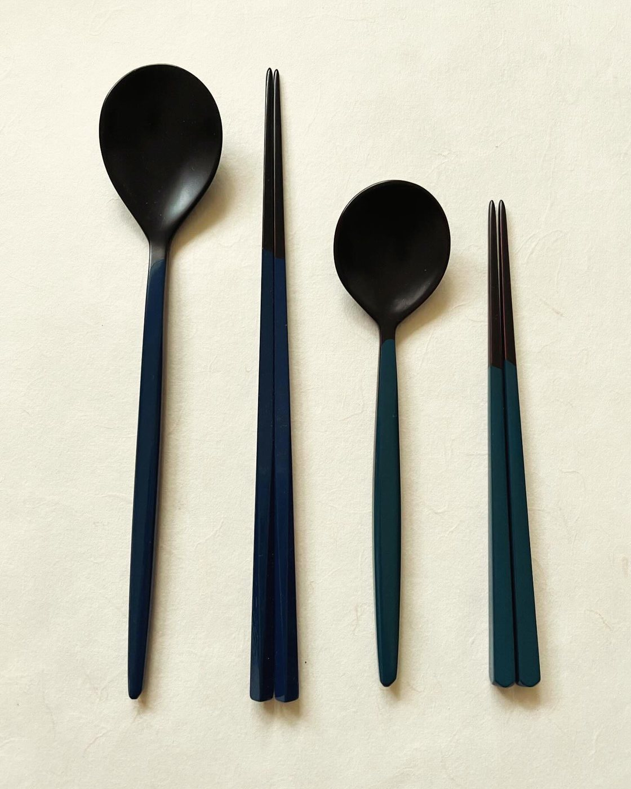
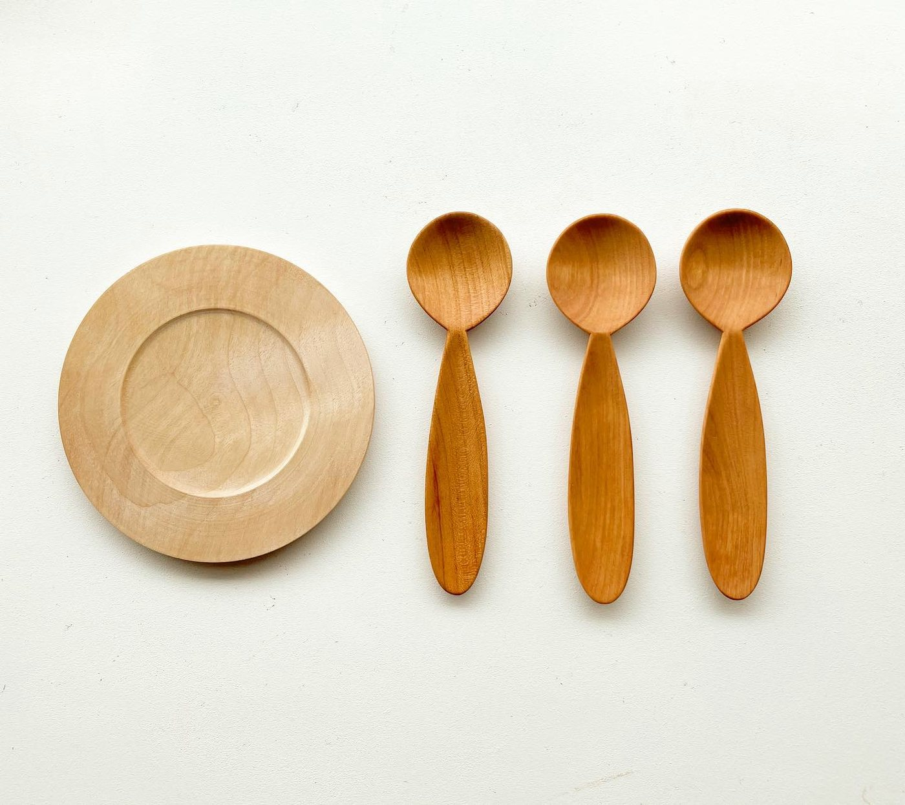
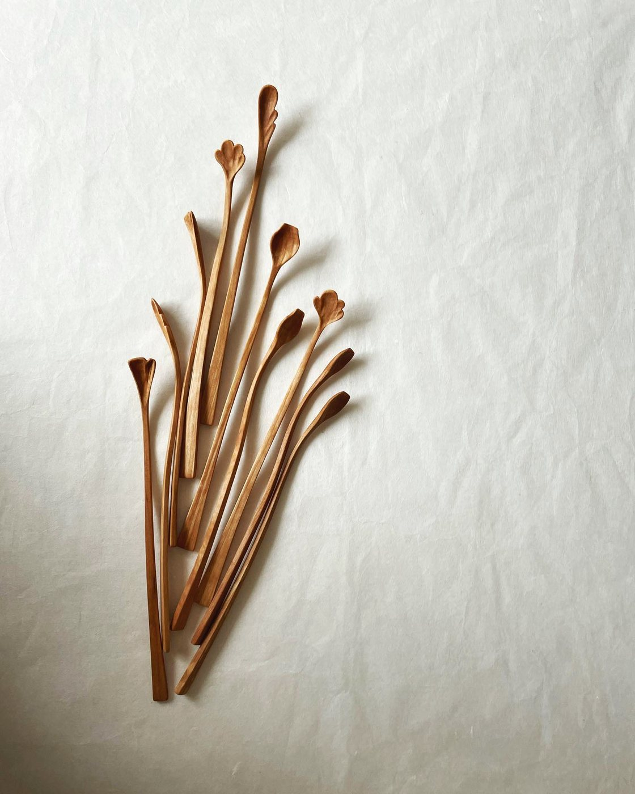
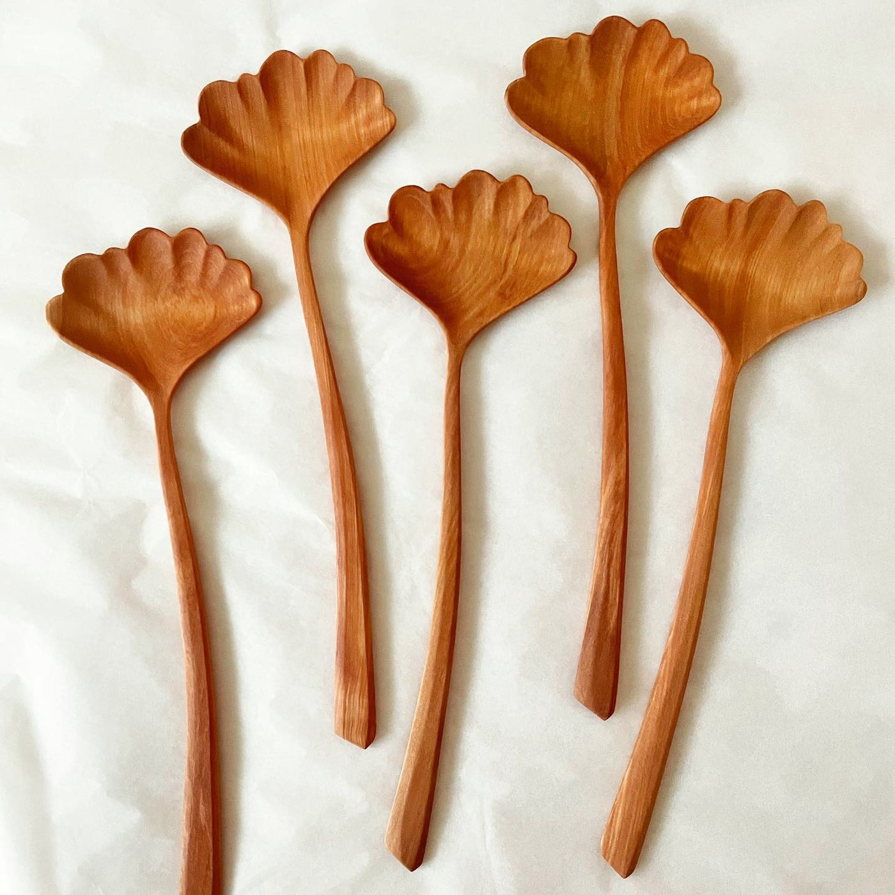
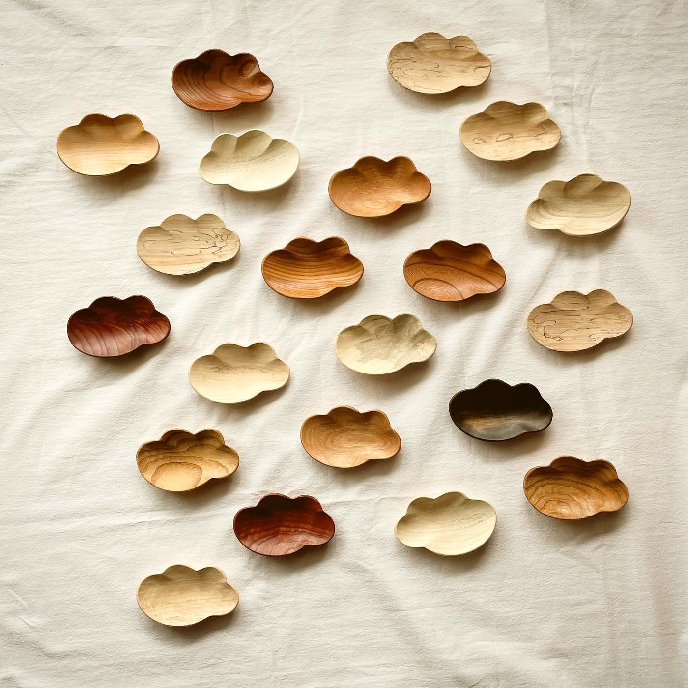
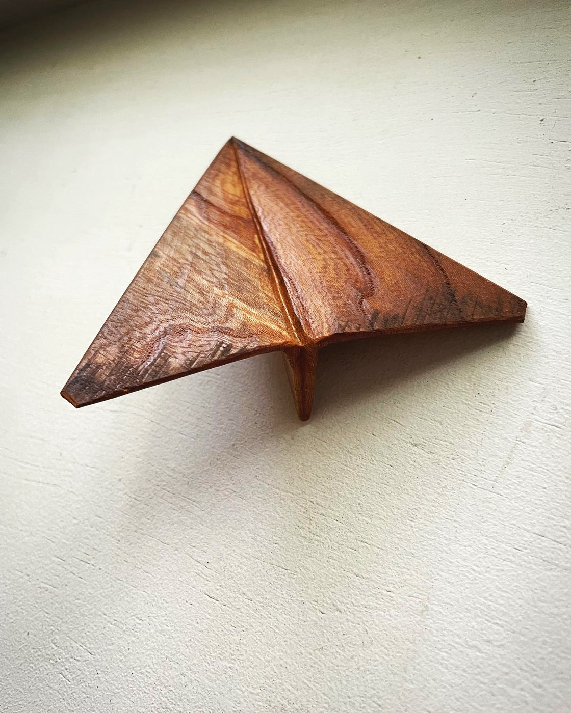
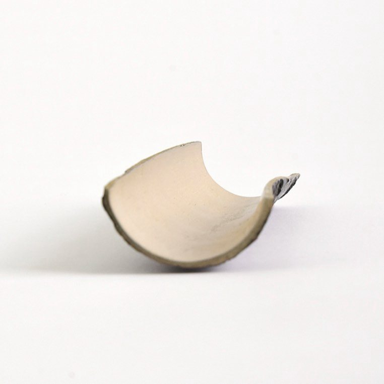
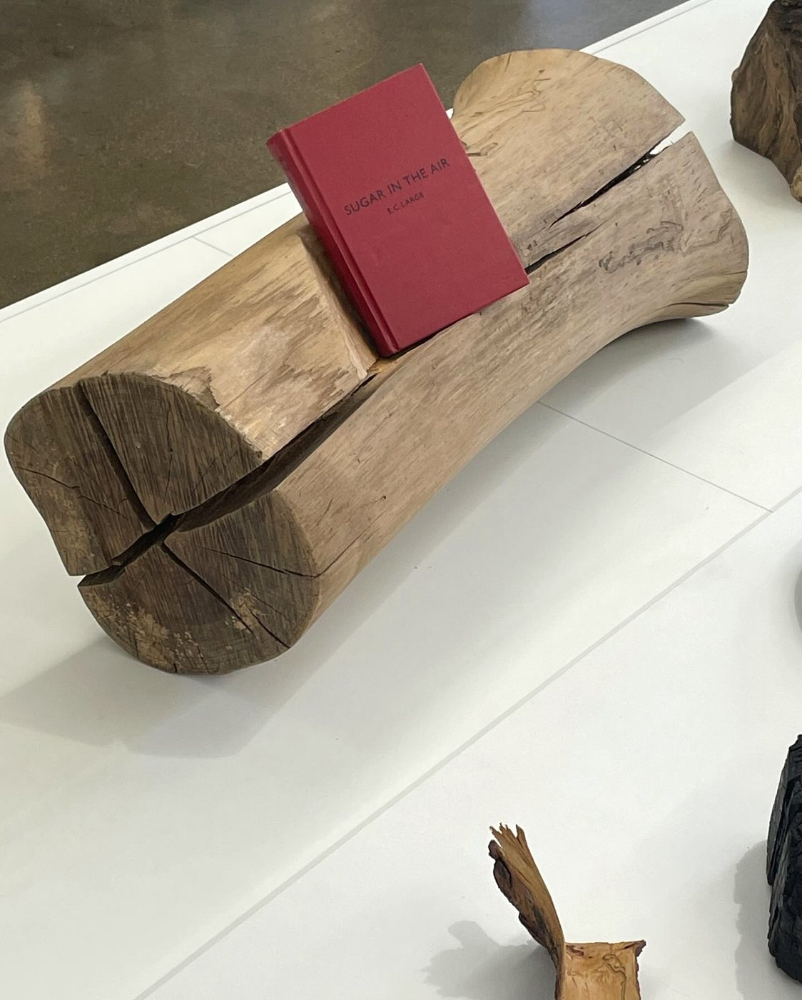
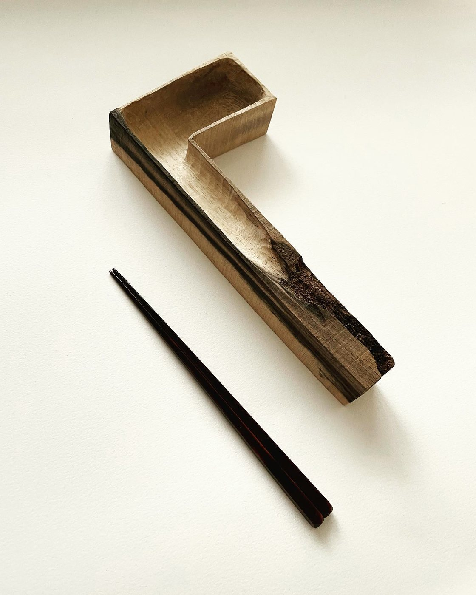
Contact
Catalogue and trade enquiries are welcome by email. If you would like an invitation to Maison&Objet Paris, please write and I will send one.